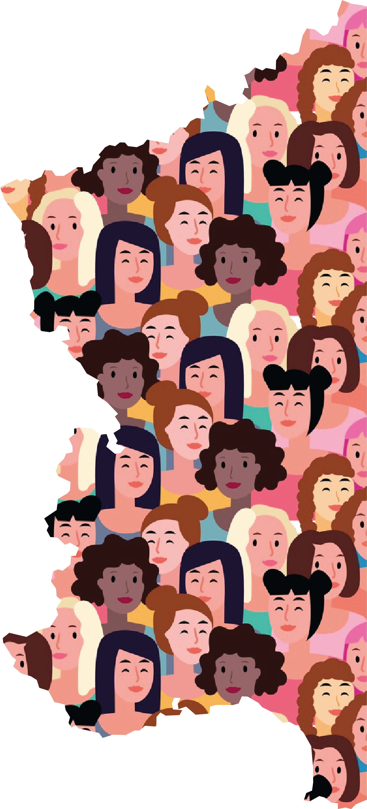

À propos de SOFIE 2.0
Depuis plusieurs années, l’Observatoire des territoires de l’ANCT conduit un certain nombre de travaux pour améliorer la connaissance de la dimension territoriale des inégalités entre les femmes et les hommes :
La dernière version de l’application SOFIE s’inscrit dans le prolongement de ces travaux.
Objectifs
SOFIE a pour objectif d’aider à la réalisation de diagnostics territorialisés de l’accès à l’emploi des femmes en dressant au niveau des intercommunalités et établissements publics territoriaux de la métropole du Grand Paris (en comparaison avec la France entière et les autres intercommunalités et EPT), un portrait de la situation des femmes face à l’emploi et des principaux freins et leviers pouvant l’améliorer. Cette application vise à fournir des clés pour se saisir de la question dans les politiques locales et partenariales conduites à l’échelle des intercommunalités et EPT.
Les indicateurs présentés dans SOFIE 2.0, non exhaustifs, pourront être complétés, notamment par d’autres données qualitatives définies localement en lien avec les différents acteurs concernés et auprès des bénéficiaires elles-mêmes.
Documentation
Retrouvez tous les liens utiles sur la page "Egalité profesionnelle et autonomie économique des femmes" du Ministère chargé de l'égalité entre les femmes et les hommes, de la diversité et de l'égalité des chances.
Crédits et licence
La construction des indicateurs est détaillée dans l'onglet Cartes & données. La description des indicateurs statistiques utilisés dans l'application inclut des liens vers de la documentation, spécifique à chaque indicateur.
Les scripts ayant servi à la construction de l'application sont disponibles au lien suivant : https://github.com/observatoire-territoires/SOFIE-2.0
Cette application est disponible en licence libre GPL-3.0 License. Elle est conçue et développée par des membres de l'Observatoire des territoires (ANCT) grâce notamment à la librairie de datavisualisation d3.js développée par Mike Bostock. Les cartes présentes dans le dictionnaire de données ont été réalisées par l'équipe cartographie du pôle Analyse et Diagnostics Territoriaux de l'ANCT. La dernière version de SOFIE n'aurait pas été la même sans les retours attentifs des membres du pôle ADT de l'ANCT. Un grand merci à elles et eux.
Crédits image écran d'accueil : image Freepik.
Des questions ? Des suggestions ? Contactez-nous via notre plateforme de contact ou par courriel à observatoire@anct.gouv.fr.
